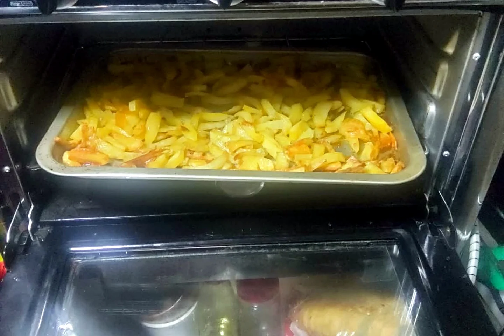

Kochen und Backen auf kleinstem Raum — meine Küche im roten T4

Eine große Küche hatte ich im Roten nie. Trotzdem wollte ich unterwegs nicht nur Brote schmieren oder jeden Tag auswärts essen. Ich wollte Kaffee kochen, etwas Warmes zubereiten und sogar backen können. Also entstand meine Küche nicht auf vielen Quadratmetern, sondern aus festen Abläufen.
Ein Gerät, mehrere Aufgaben
Meine Kochstelle und der kleine Ofen waren echte Arbeitstiere. Im Ofen konnte ich Aufläufe, Ofengemüse oder etwas Überbackenes machen. Auf der Kochstelle standen Topf, Pfanne oder Kaffeekocher. Mehr brauchte ich meistens nicht — aber ich musste vorher wissen, was ich wann benutzen wollte.
In einer normalen Küche stellt man schnell noch eine Schüssel daneben. Im T4 blockiert eine einzige Schüssel vielleicht schon die ganze Arbeitsfläche. Darum habe ich Zutaten zuerst bereitgelegt, Verpackungen direkt wieder verstaut und benutzte Dinge sofort abgespült oder zur Seite geräumt. Dieses kleine „Mise en place“ war für mich der Unterschied zwischen gemütlich kochen und völligem Chaos.
Was sich für kleine Küchen bewährt hat
- Gerichte mit wenigen Zutaten und einem Topf oder einer Form.
- Lebensmittel, die sich für mehrere Mahlzeiten kombinieren lassen.
- Ein fester Platz für Gewürze, Messer und Feuerzeug.
- So wenig Verpackung wie möglich, damit der Müll nicht den Bus übernimmt.
- Nach dem Essen sofort aufräumen — morgen früh dankt man sich dafür.
Sicherheit gehört immer mit auf den Speiseplan
Beim Kochen im Fahrzeug habe ich immer gelüftet und brennbare Dinge aus dem direkten Bereich der Flamme entfernt. Ein Gerät bleibt niemals unbeaufsichtigt und läuft selbstverständlich nicht während der Fahrt. Gasleitungen, Anschlüsse und Geräte müssen für ihren Einsatz geeignet und in Ordnung sein. Gerade auf so engem Raum können Hitze, Kohlenmonoxid und Feuer schnell gefährlich werden.
Backen im T4 war für mich immer ein kleines Stück Zuhause. Wenn draußen schlechtes Wetter war und innen etwas Warmes aus dem Ofen kam, fühlte sich der Rote plötzlich nicht mehr klein an. Dann war er einfach meine Wohnung — nur eben auf vier Rädern.
Bis bald und immer gute Fahrt,
eure Tussy 💛